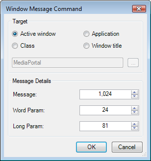

Message Command

This window is for setting up and modifying Windows Message commands.
Firstly you need to choose the message target:
- Active window- Sends to the foreground window.
- Application - Finds a running process of the specified executable and sends to that.
- Class - Sends to a given class name, this is how to communicate with ffdshow.
- Window title - Finds a window with the given title.
Message:
Set the message value here, right-click for common options.
Word Param:
Set the WParam value here.
Long Param:
Set the LParam value here.
Click OK to save your Message Command and return, or Cancel to discard your changes and return.